首页 / 配置（SPRO）
配置路线：48 个任务的完整索引
SPRO 路径 · 前后台 · 手顺 · 真实画面 —— 全部与教材一致
这一页是「操作手册式」的索引，按 SPRO 的实际顺序分成 A~J 十组。每个任务给出：教材原文的菜单/IMG 路径、T-code、手顺要点、以及真实系统画面（原文件名标注在图上，可回 Word 原稿核对）。路径文本可以点击复制。
| 组 | 主题 | 任务号 | 任务数 |
|---|
| A | 企业结构：组织与分配 | 01、02、03、04、05、06、07、11、13 | 9 |
| B | 销售办公室与销售组 | 08、09、10、12 | 4 |
| C | 装运与后勤执行 | 14、15、16、17、18、19、20 | 7 |
| D | 客户主数据与账户组 | 21 | 1 |
| E | 定价与税 | 22、23、24、25、26、27、28 | 7 |
| F | 账户确定与更新组 | 29、30、31、32 | 4 |
| G | 合作伙伴确定 | 33 | 1 |
| H | 主数据维护（前台） | 34、35、36、37、38、39 | 6 |
| I | 销售流程（前台） | 40、41、42、43、44、45 | 6 |
| J | 分析与报表 | 46、47、48 | 3 |
A. 企业结构：组织与分配
先把坐标建起来：销售组织、分销渠道、产品组，以及它们的分配与销售范围。
任务 01
定义销售组织
后台（配置）
销售数据的最高组织键。客户与物料的销售视图都挂在它下面。
教材菜单 / IMG 路径企业结构 → 定义 → 销售和分销 → 定义、复制、删除、检查销售组织
手顺要点（教材原文的逐步说明）
- 双击“定义销售组织”
- 点击保存
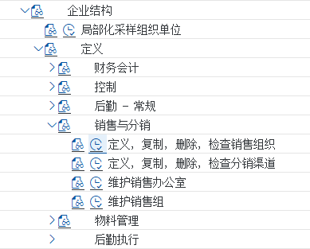
画面 01-1双击“定义销售组织”教材《S4.docx》SD 模块 · image1078.png 画面 01-2点击保存教材《S4.docx》SD 模块 · image1082.png
画面 01-2点击保存教材《S4.docx》SD 模块 · image1082.png任务 02
定义分销渠道
后台（配置）
产品「怎么卖出去」的途径：直销、批发、零售。多对多分配给销售组织。
教材菜单 / IMG 路径企业结构 → 定义 → 销售和分销 → 定义、复制、删除、检查分销渠道
手顺要点（教材原文的逐步说明）
- 企业结构－定义－销售和分销－定义、复制、删除、检查分销渠道
- 点击定义分销渠道
- 点击“新条目”
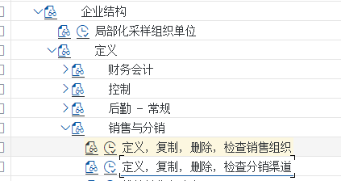
画面 02-1企业结构－定义－销售和分销－定义、复制、删除、检查分销渠道教材《S4.docx》SD 模块 · image1084.png 画面 02-2点击“新条目”教材《S4.docx》SD 模块 · image1087.png
画面 02-2点击“新条目”教材《S4.docx》SD 模块 · image1087.png任务 03
定义产品组
后台（配置）
产品「按线分组」：整机 / 备件 / 服务。多对多分配给销售组织。
教材菜单 / IMG 路径企业结构 → 定义 → 后勤常规 → 定义、复制、删除、检查产品组
手顺要点（教材原文的逐步说明）
- 企业结构－定义－后勤常规－定义、复制、删除、检查产品组
- 点击“定义产品组”
- 点击“新条目”点击“新条目”
Z2 增压泵
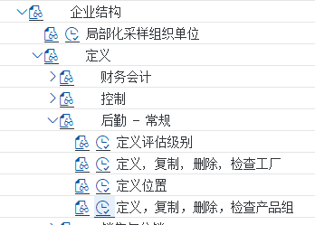
画面 03-1企业结构－定义－后勤常规－定义、复制、删除、检查产品组教材《S4.docx》SD 模块 · image1088.png 画面 03-2点击“新条目”点击“新条目”
Z2 增压泵教材《S4.docx》SD 模块 · image1091.png
画面 03-2点击“新条目”点击“新条目”
Z2 增压泵教材《S4.docx》SD 模块 · image1091.png任务 04
将销售组织分配给公司代码
后台（配置）
销售组织属于哪个公司代码（多对一）——决定了收入落在哪套账上。
教材菜单 / IMG 路径企业结构 → 分配 → 销售和分销 → 给公司代码分配销售组织
手顺要点（教材原文的逐步说明）
- 解释：在 SAP 中一个销售组织只可以分配给一个公司代码，但是一个公司代码可以有多个销售组织。但是销售组织分配给一个公司代码，只是意味着这个销售组织的销售收入和在财务上是属于这个公司代码的。如果是集团公司，销售组织仍然可以销售其他公司代码的产品，这样就构成了跨公司销售。
- 直接录入公司代码CoCd为C999
 画面 04-1解释：在 SAP 中一个销售组织只可以分配给一个公司代码，但是一个公司代码可以有多个销售组织。但是销售组织分配给一个公司代码，只是意味着这个销售组织的销售收入和在财务上是属于这…教材《S4.docx》SD 模块 · image1092.png
画面 04-1解释：在 SAP 中一个销售组织只可以分配给一个公司代码，但是一个公司代码可以有多个销售组织。但是销售组织分配给一个公司代码，只是意味着这个销售组织的销售收入和在财务上是属于这…教材《S4.docx》SD 模块 · image1092.png 画面 04-2直接录入公司代码CoCd为C999教材《S4.docx》SD 模块 · image1094.png
画面 04-2直接录入公司代码CoCd为C999教材《S4.docx》SD 模块 · image1094.png任务 05
将分销渠道分配给销售组织
后台（配置）
把渠道挂到销售组织上，才能组成销售范围。
教材菜单 / IMG 路径企业结构 → 分配 → 销售和分销 → 给销售组织分配分销渠道
手顺要点（教材原文的逐步说明）
- 解释：我们将“直销”和“批发”两个分销渠道分配给“颐宁销售组织”，这个分配意味着 “颐宁销售组织”可以从事“直销”和“批发”两种渠道的销售，其他的销售组织也可能从事这两种渠道的销售，所以分配是多对多的关系
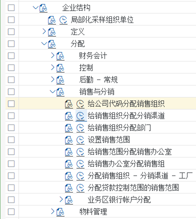
画面 05-1解释：我们将“直销”和“批发”两个分销渠道分配给“颐宁销售组织”，这个分配意味着 “颐宁销售组织”可以从事“直销”和“批发”两种渠道的销售，其他的销售组织也可能从事这两种渠道的…教材《S4.docx》SD 模块 · image1097.png 画面 05-2解释：我们将“直销”和“批发”两个分销渠道分配给“颐宁销售组织”，这个分配意味着 “颐宁销售组织”可以从事“直销”和“批发”两种渠道的销售，其他的销售组织也可能从事这两种渠道的…教材《S4.docx》SD 模块 · image1099.png
画面 05-2解释：我们将“直销”和“批发”两个分销渠道分配给“颐宁销售组织”，这个分配意味着 “颐宁销售组织”可以从事“直销”和“批发”两种渠道的销售，其他的销售组织也可能从事这两种渠道的…教材《S4.docx》SD 模块 · image1099.png任务 06
将产品组分配给销售组织
后台（配置）
把产品组挂到销售组织上（教材菜单里叫「给销售组织分配部门」）。
教材菜单 / IMG 路径企业结构 → 分配 → 销售和分销 → 给销售组织分配部门
手顺要点（教材原文的逐步说明）
- 解释：本步中将“铸钢泵”和“增压泵”分配给“颐宁销售组织”。这意味着“颐宁销售组织”可以从事“铸钢泵”和“增压泵”的销售。其他销售组织也可能从事这两个产品组的销售，所以这个分配也是多对多
 画面 06-1解释：本步中将“铸钢泵”和“增压泵”分配给“颐宁销售组织”。这意味着“颐宁销售组织”可以从事“铸钢泵”和“增压泵”的销售。其他销售组织也可能从事这两个产品组的销售，所以这个分配…教材《S4.docx》SD 模块 · image1101.png
画面 06-1解释：本步中将“铸钢泵”和“增压泵”分配给“颐宁销售组织”。这意味着“颐宁销售组织”可以从事“铸钢泵”和“增压泵”的销售。其他销售组织也可能从事这两个产品组的销售，所以这个分配…教材《S4.docx》SD 模块 · image1101.png 画面 06-2解释：本步中将“铸钢泵”和“增压泵”分配给“颐宁销售组织”。这意味着“颐宁销售组织”可以从事“铸钢泵”和“增压泵”的销售。其他销售组织也可能从事这两个产品组的销售，所以这个分配…教材《S4.docx》SD 模块 · image1103.png
画面 06-2解释：本步中将“铸钢泵”和“增压泵”分配给“颐宁销售组织”。这意味着“颐宁销售组织”可以从事“铸钢泵”和“增压泵”的销售。其他销售组织也可能从事这两个产品组的销售，所以这个分配…教材《S4.docx》SD 模块 · image1103.png任务 07
设置销售范围
后台（配置）
把「销售组织 × 分销渠道 × 产品组」的组合逐个建出来，共 4 个。
教材菜单 / IMG 路径企业结构 → 分配 → 销售和分销 → 设置销售范围
手顺要点（教材原文的逐步说明）
- 解释：SAP 把销售组织、分销渠道和产品组的组合称为“销售范围”，它的业务含义是某个销售组织通过某种分销渠道经营某个产品组。在颐宁销售组织中，我们可以分配通过直销 和批发经营两种产品组的销售，一共有四个销售范围，我们分别设置，销售范围也叫销售部门
 画面 07-1解释：SAP 把销售组织、分销渠道和产品组的组合称为“销售范围”，它的业务含义是某个销售组织通过某种分销渠道经营某个产品组。在颐宁销售组织中，我们可以分配通过直销 和批发经营两…教材《S4.docx》SD 模块 · image1105.png
画面 07-1解释：SAP 把销售组织、分销渠道和产品组的组合称为“销售范围”，它的业务含义是某个销售组织通过某种分销渠道经营某个产品组。在颐宁销售组织中，我们可以分配通过直销 和批发经营两…教材《S4.docx》SD 模块 · image1105.png 画面 07-2解释：SAP 把销售组织、分销渠道和产品组的组合称为“销售范围”，它的业务含义是某个销售组织通过某种分销渠道经营某个产品组。在颐宁销售组织中，我们可以分配通过直销 和批发经营两…教材《S4.docx》SD 模块 · image1106.png
画面 07-2解释：SAP 把销售组织、分销渠道和产品组的组合称为“销售范围”，它的业务含义是某个销售组织通过某种分销渠道经营某个产品组。在颐宁销售组织中，我们可以分配通过直销 和批发经营两…教材《S4.docx》SD 模块 · image1106.png任务 11
简单的排列组合，总共8种组合
后台（配置）
教材的思考题：2 渠道 × 2 产品组的分配组合共 8 种，先想清楚再配。
任务 13
将工厂分配给销售组织/分销渠道
后台（配置）
工厂 → 销售组织/分销渠道（多对多）：决定这套销售组织能从哪个工厂发货。
教材菜单 / IMG 路径企业结构 → 分配 → 销售和分销 → 分配销售组织-分销渠道-工厂
手顺要点（教材原文的逐步说明）
- 企业结构－分配－销售和分销－分配销售组织-分销渠道-工厂
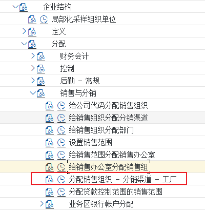
画面 13-1企业结构－分配－销售和分销－分配销售组织-分销渠道-工厂教材《S4.docx》SD 模块 · image1128.png 画面 13-2企业结构－分配－销售和分销－分配销售组织-分销渠道-工厂教材《S4.docx》SD 模块 · image1132.png
画面 13-2企业结构－分配－销售和分销－分配销售组织-分销渠道-工厂教材《S4.docx》SD 模块 · image1132.png
B. 销售办公室与销售组
用于统计与权限的组织单位（不影响定价逻辑）。
任务 08
定义销售办公室
后台（配置）
销售办公室＝按地区/责任划分的销售机构，用于统计与权限。
教材菜单 / IMG 路径企业结构 → 定义 → 销售和分销 → 维护销售办公室
手顺要点（教材原文的逐步说明）
- 企业结构－定义－销售和分销－维护销售办公室
- Z001 颐宁北方销售公司
 画面 08-1企业结构－定义－销售和分销－维护销售办公室教材《S4.docx》SD 模块 · image1109.png
画面 08-1企业结构－定义－销售和分销－维护销售办公室教材《S4.docx》SD 模块 · image1109.png 画面 08-2企业结构－定义－销售和分销－维护销售办公室教材《S4.docx》SD 模块 · image1113.png
画面 08-2企业结构－定义－销售和分销－维护销售办公室教材《S4.docx》SD 模块 · image1113.png任务 09
定义销售组
后台（配置）
销售组＝销售办公室里的人员小组。
教材菜单 / IMG 路径企业结构 → 定义 → 销售和分销 → 维护销售组
手顺要点（教材原文的逐步说明）
- 在 SD 中我们还可以定义“销售组”来统计和分析。在颐宁公司，我们定义东北、西北、东南、西南四个销售组。他们分别隶属于北方和南方销售办公室。销售组和销售办公室在 SD都是可选的组织结构，不是必选的
企业结构－定义－销售和分销－维护销售组
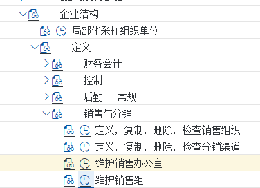
画面 09-1在 SD 中我们还可以定义“销售组”来统计和分析。在颐宁公司，我们定义东北、西北、东南、西南四个销售组。他们分别隶属于北方和南方销售办公室。销售组和销售办公室在 SD都是可选的…教材《S4.docx》SD 模块 · image1116.png 画面 09-2在 SD 中我们还可以定义“销售组”来统计和分析。在颐宁公司，我们定义东北、西北、东南、西南四个销售组。他们分别隶属于北方和南方销售办公室。销售组和销售办公室在 SD都是可选的…教材《S4.docx》SD 模块 · image1118.png
画面 09-2在 SD 中我们还可以定义“销售组”来统计和分析。在颐宁公司，我们定义东北、西北、东南、西南四个销售组。他们分别隶属于北方和南方销售办公室。销售组和销售办公室在 SD都是可选的…教材《S4.docx》SD 模块 · image1118.png任务 10
给销售范围分配销售办公室
后台（配置）
把销售办公室挂到销售范围上。
教材菜单 / IMG 路径企业结构 → 分配 → 销售和分销 → 给销售范围分配销售办公室
手顺要点（教材原文的逐步说明）
- 颐宁公司的北方和南方两个销售办公室都可以从事铸钢泵和增压泵的批发和直销，所以我们将这两个销售办公室分配给这四个销售范围
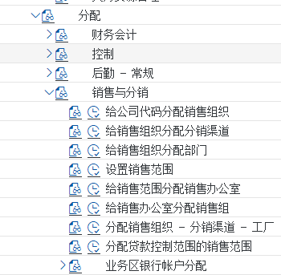
画面 10-1颐宁公司的北方和南方两个销售办公室都可以从事铸钢泵和增压泵的批发和直销，所以我们将这两个销售办公室分配给这四个销售范围教材《S4.docx》SD 模块 · image1119.png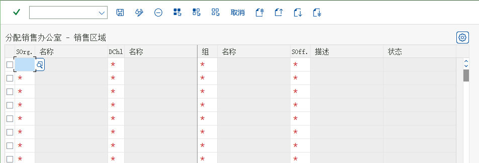
画面 10-2颐宁公司的北方和南方两个销售办公室都可以从事铸钢泵和增压泵的批发和直销，所以我们将这两个销售办公室分配给这四个销售范围教材《S4.docx》SD 模块 · image1121.png任务 12
将销售组分配给销售办公室
后台（配置）
把销售组挂到销售办公室上。
教材菜单 / IMG 路径企业结构 → 分配 → 销售和分销 → 给销售办公室分配销售组
 画面 12-1将销售组分配给销售办公室教材《S4.docx》· SD 任务 12 将销售组分配给销售办公室
画面 12-1将销售组分配给销售办公室教材《S4.docx》· SD 任务 12 将销售组分配给销售办公室
C. 装运与后勤执行
发货从哪发、装在哪、从哪个库存地点拣货。
任务 14
定义起运点
后台（配置）
起运点＝发货的起始地点。教材用 Z999 颐宁装运点，与工厂多对多。
教材菜单 / IMG 路径企业结构 → 定义 → 后勤执行 → 定义、复制、删除、检查起运点
手顺要点（教材原文的逐步说明）
- 企业结构－定义－后勤执行－定义、复制、删除、检查起运点
- Z999 颐宁装运点
 画面 14-1企业结构－定义－后勤执行－定义、复制、删除、检查起运点教材《S4.docx》SD 模块 · image1133.png
画面 14-1企业结构－定义－后勤执行－定义、复制、删除、检查起运点教材《S4.docx》SD 模块 · image1133.png 画面 14-2企业结构－定义－后勤执行－定义、复制、删除、检查起运点教材《S4.docx》SD 模块 · image1138.png
画面 14-2企业结构－定义－后勤执行－定义、复制、删除、检查起运点教材《S4.docx》SD 模块 · image1138.png任务 15
定义装载点
后台（配置）
装载点＝装货的具体位置，挂在起运点上。
教材菜单 / IMG 路径企业结构 → 定义 → 后勤执行 → 维护装载点
手顺要点（教材原文的逐步说明）
- 解释：起运点之下可以再细分装载点，来指明确定的装载地点，如一个卡车起运点中可能按仓库的大门分成三个装载点等等。本步骤我们将定义装载点。发货单中可以注明装载点。单装载点是 SD 中可选的组织结构。没有装载点的定义. SD 也能使用。
企业结构－定义－后勤执行－维护装载点
- 输入工作范围
- 点击新条目，输入新的装载点
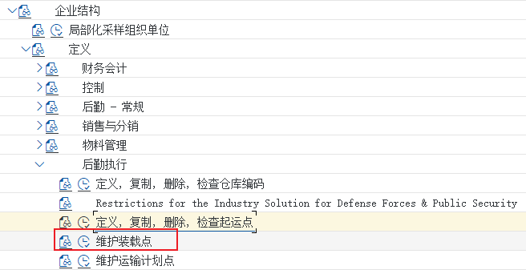
画面 15-1解释：起运点之下可以再细分装载点，来指明确定的装载地点，如一个卡车起运点中可能按仓库的大门分成三个装载点等等。本步骤我们将定义装载点。发货单中可以注明装载点。单装载点是 SD …教材《S4.docx》SD 模块 · image1141.png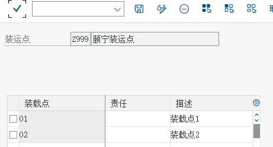
画面 15-2点击新条目，输入新的装载点教材《S4.docx》SD 模块 · image1145.png任务 16
将起运点分配给工厂
后台（配置）
把起运点分配给工厂（一个工厂可以有公路、水路等几个起运点）。
教材菜单 / IMG 路径企业结构 → 分配 → 后勤执行 → 给工厂分配起运点
手顺要点（教材原文的逐步说明）
- 解释：一个工厂可以有几个起运点，如公路、水路等。一个起运点也可以是几个工厂公用的，所以两者是多对多的关系。
- 点击分配
 画面 16-1解释：一个工厂可以有几个起运点，如公路、水路等。一个起运点也可以是几个工厂公用的，所以两者是多对多的关系。教材《S4.docx》SD 模块 · image1146.png
画面 16-1解释：一个工厂可以有几个起运点，如公路、水路等。一个起运点也可以是几个工厂公用的，所以两者是多对多的关系。教材《S4.docx》SD 模块 · image1146.png 画面 16-2解释：一个工厂可以有几个起运点，如公路、水路等。一个起运点也可以是几个工厂公用的，所以两者是多对多的关系。教材《S4.docx》SD 模块 · image1149.png
画面 16-2解释：一个工厂可以有几个起运点，如公路、水路等。一个起运点也可以是几个工厂公用的，所以两者是多对多的关系。教材《S4.docx》SD 模块 · image1149.png任务 17
定义运送条件
后台（配置）
运送条件（Shippping Conditions）：与物料/工厂一起决定起运点。
教材菜单 / IMG 路径后勤执行 → 装运 → 基本发运功能 → 装运点和收货点确认 → 定义运送条件
手顺要点（教材原文的逐步说明）
- 后勤执行－装运－基本发运功能－装运点和收货点确认－定义运送条件
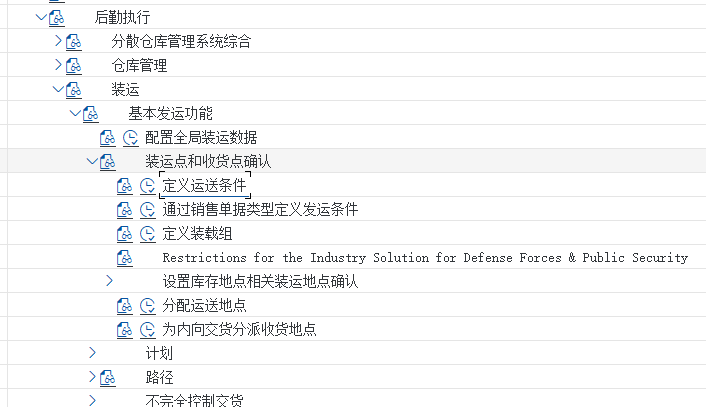
画面 17-1后勤执行－装运－基本发运功能－装运点和收货点确认－定义运送条件教材《S4.docx》SD 模块 · image1150.png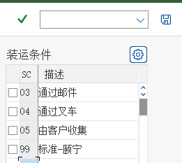
画面 17-2后勤执行－装运－基本发运功能－装运点和收货点确认－定义运送条件教材《S4.docx》SD 模块 · image1151.png任务 18
定义装载组
后台（配置）
装载组：与物料主数据一起决定装载点。
教材菜单 / IMG 路径后勤执行 → 装运 → 基本发运功能 → 装运点和收货点确认 → 定义装载组
手顺要点（教材原文的逐步说明）
- 后勤执行－装运－基本发运功能－装运点和收货点确认－定义装载组
- Z999 叉车-颐宁
 画面 18-1后勤执行－装运－基本发运功能－装运点和收货点确认－定义装载组教材《S4.docx》SD 模块 · image1153.png
画面 18-1后勤执行－装运－基本发运功能－装运点和收货点确认－定义装载组教材《S4.docx》SD 模块 · image1153.png 画面 18-2Z999 叉车-颐宁教材《S4.docx》SD 模块 · image1155.png
画面 18-2Z999 叉车-颐宁教材《S4.docx》SD 模块 · image1155.png任务 19
分配起运点
后台（配置）
按运送地点分配（起运点的进一步细化）。
教材菜单 / IMG 路径后勤执行 → 装运 → 装运点和收货点确认 → 分配运送地点
手顺要点（教材原文的逐步说明）
- 点击新条目
99 Z999 P999 Z999
 画面 19-1点击新条目
99 Z999 P999 Z999教材《S4.docx》SD 模块 · image1156.png
画面 19-1点击新条目
99 Z999 P999 Z999教材《S4.docx》SD 模块 · image1156.png 画面 19-2点击新条目
99 Z999 P999 Z999教材《S4.docx》SD 模块 · image1158.png
画面 19-2点击新条目
99 Z999 P999 Z999教材《S4.docx》SD 模块 · image1158.png任务 20
分配拣配库存地点
后台（配置）
拣配库存地点：由起运点 + 工厂（+ 存储条件）决定从哪个库存地点拣货。
教材菜单 / IMG 路径后勤执行 → 装运 → 拣配 → 确定拣配地点 → 分配拣配地点
手顺要点（教材原文的逐步说明）
- 解释：在处理销售订单的过程中，SAP 系统除了可以自动建立起运点之外，还可以自动建立货物从哪个库存地点拣配。本配置可以根据起运点、工厂和存储条件（物料主数据的一个 参数）确定销售地点拣配的库存地点。本文中我们只需要选用起运点和工厂两个条件。
- 解释：前三个灰色字段是起决定作用的起运点、工厂和存储条件。
 画面 20-1解释：在处理销售订单的过程中，SAP 系统除了可以自动建立起运点之外，还可以自动建立货物从哪个库存地点拣配。本配置可以根据起运点、工厂和存储条件（物料主数据的一个 参数）确定销…教材《S4.docx》SD 模块 · image1159.png
画面 20-1解释：在处理销售订单的过程中，SAP 系统除了可以自动建立起运点之外，还可以自动建立货物从哪个库存地点拣配。本配置可以根据起运点、工厂和存储条件（物料主数据的一个 参数）确定销…教材《S4.docx》SD 模块 · image1159.png 画面 20-2解释：前三个灰色字段是起决定作用的起运点、工厂和存储条件。教材《S4.docx》SD 模块 · image1161.png
画面 20-2解释：前三个灰色字段是起决定作用的起运点、工厂和存储条件。教材《S4.docx》SD 模块 · image1161.png
D. 客户主数据与账户组
客户账户组的屏幕格式：决定客户主数据销售视图长什么样。
任务 21
维护客户账户组的销售数据
后台（配置）
客户账户组的屏幕格式：决定客户主数据销售视图里哪些字段必填/可选/隐藏。
教材菜单 / IMG 路径财务会计(新) → 应收账款和应付账款 → 客户账户 → 主数据 → 创建客户主记录准备 → 定义带有屏幕格式的账户组（客户）
手顺要点（教材原文的逐步说明）
- 解释：在本步骤中，我们将根据不停的客户账户组维护客户销售视图中哪些参数是必须输入的，哪些是不能输入的，哪些是可选输入的。
财务会计(新)－应收账款和应付账款－客户账户－主数据－创建客户主记录准备－定义带有屏幕格式的账户组（客户）
- 我们已经创建了两个客户账户组，在这里我们需要修改这两个客户账户组。双击 K001
- 返回，点击“发货”
- 返回点击“计费”
- 进入“销售数据”双击“销售”
设置如下
- 返回，双击“计费”
 画面 21-1解释：在本步骤中，我们将根据不停的客户账户组维护客户销售视图中哪些参数是必须输入的，哪些是不能输入的，哪些是可选输入的。
财务会计(新)－应收账款和应付账款－客户账户－主数据－…教材《S4.docx》SD 模块 · image1162.png
画面 21-1解释：在本步骤中，我们将根据不停的客户账户组维护客户销售视图中哪些参数是必须输入的，哪些是不能输入的，哪些是可选输入的。
财务会计(新)－应收账款和应付账款－客户账户－主数据－…教材《S4.docx》SD 模块 · image1162.png 画面 21-2返回，双击“计费”教材《S4.docx》SD 模块 · image1177.png
画面 21-2返回，双击“计费”教材《S4.docx》SD 模块 · image1177.png
E. 定价与税
条件技术（定价过程、过程确定）与税收确定规则。
任务 22
定义定价过程
后台（配置）RVAA01
定价过程（教材用 RVAA01 标准）：步骤 = 条件类型 + 计算类型 + 账码。
教材菜单 / IMG 路径销售和分销 → 基本功能 → 定价 → 定价控制 → 定义并分配定价过程
手顺要点（教材原文的逐步说明）
- 销售和分销－基本功能－定价－定价控制－定义并分配定价过程
- 弹出
- 选中过程“RVAA01 ”，点击左侧的“控制数据”
 画面 22-1销售和分销－基本功能－定价－定价控制－定义并分配定价过程教材《S4.docx》SD 模块 · image1178.png
画面 22-1销售和分销－基本功能－定价－定价控制－定义并分配定价过程教材《S4.docx》SD 模块 · image1178.png 画面 22-2选中过程“RVAA01 ”，点击左侧的“控制数据”教材《S4.docx》SD 模块 · image1181.png
画面 22-2选中过程“RVAA01 ”，点击左侧的“控制数据”教材《S4.docx》SD 模块 · image1181.png任务 23
定义客户和单据定价过程
后台（配置）
客户定价过程与单据定价过程：定价过程确定的两个键。
教材菜单 / IMG 路径销售和分销 → 基本功能 → 定价 → 定价控制 → 定义并分配定价过程
手顺要点（教材原文的逐步说明）
- 销售和分销－基本功能－定价－定价控制－定义并分配定价过程
- 解释：颐宁公司采用统一的定价过程，所以我们只需要使用系统标准的客户定价过程就可以了。这个客户定价过程参数我们将在定义客户主数据时 6.36 维护订货方主数据的销售视 图中分配。
返回
 画面 23-1销售和分销－基本功能－定价－定价控制－定义并分配定价过程教材《S4.docx》SD 模块 · image1182.png
画面 23-1销售和分销－基本功能－定价－定价控制－定义并分配定价过程教材《S4.docx》SD 模块 · image1182.png 画面 23-2解释：颐宁公司采用统一的定价过程，所以我们只需要使用系统标准的客户定价过程就可以了。这个客户定价过程参数我们将在定义客户主数据时 6.36 维护订货方主数据的销售视 图中分配。…教材《S4.docx》SD 模块 · image1184.png
画面 23-2解释：颐宁公司采用统一的定价过程，所以我们只需要使用系统标准的客户定价过程就可以了。这个客户定价过程参数我们将在定义客户主数据时 6.36 维护订货方主数据的销售视 图中分配。…教材《S4.docx》SD 模块 · image1184.png任务 24
定义定价过程确定
后台（配置）
定价过程确定：销售范围 + 客户定价过程 + 单据定价过程 → 用哪套过程。
教材菜单 / IMG 路径销售和分销 → 基本功能 → 定价 → 定价控制 → 定义并分配定价过程
手顺要点（教材原文的逐步说明）
- 销售和分销－基本功能－定价－定价控制－定义并分配定价过程
- 我们来定义颐宁公司新的定价确认点击新条目
 画面 24-1销售和分销－基本功能－定价－定价控制－定义并分配定价过程教材《S4.docx》SD 模块 · image1185.png
画面 24-1销售和分销－基本功能－定价－定价控制－定义并分配定价过程教材《S4.docx》SD 模块 · image1185.png 画面 24-2我们来定义颐宁公司新的定价确认点击新条目教材《S4.docx》SD 模块 · image1188.png
画面 24-2我们来定义颐宁公司新的定价确认点击新条目教材《S4.docx》SD 模块 · image1188.png任务 25
激活销售单据的物料清单和排斥
后台（配置）
物料清单与排斥（Listing / Exclusion）：限制哪些物料能在哪些客户/渠道卖。
教材菜单 / IMG 路径后勤执行 → 装运 → 基本发运功能 → 列表/排斥
手顺要点（教材原文的逐步说明）
- 后勤执行－装运－基本发运功能－列表/排斥
- 双击“根据销售单据类型激活清单/排斥”
- 解释：SAP 使用和销售定价类似的技术（称之为条件技术）来定义“清单”和“排斥”。根据屏幕的 7 个步骤，用户可以定义灵活的“ 清单” 和“ 排斥” 规则。在本部分我们采用 A00001清单过程和 B00001 排斥过程，都是简单地按客户来决定哪些物料是可以销售（“ 清单”），哪些物料是不可以销售（“ 排斥”）
QT 和 OR 是本次要用的，我们将预定义的“清单”和“排斥”分配给他们。
 画面 25-1后勤执行－装运－基本发运功能－列表/排斥教材《S4.docx》SD 模块 · image1189.png
画面 25-1后勤执行－装运－基本发运功能－列表/排斥教材《S4.docx》SD 模块 · image1189.png 画面 25-2后勤执行－装运－基本发运功能－列表/排斥教材《S4.docx》SD 模块 · image1193.png
画面 25-2后勤执行－装运－基本发运功能－列表/排斥教材《S4.docx》SD 模块 · image1193.png任务 26
维护销售单据的物料确定
后台（配置）
物料确定（Material Determination）：用替代物料顶替（如客户指定品牌货号）。
教材菜单 / IMG 路径后勤执行 → 装运 → 基本发运功能 → 物料确定 → 分配过程到销售凭证类型
手顺要点（教材原文的逐步说明）
- 解释：在有些情况下，销售订单需要输入的商品代码不是本公司标准的物料主数据代码，比如需要输入客户的物料代码，或者需要输入国际物品编码（IAN）等。在 SAP 里不需要将这些特殊的代码维护成物料主数据，而只需要维护一个 “ 物料确定” 的规则，让系统将这些特殊代码自动替换成物料主数据。“ 物料确定”规则是由销售单据的类型决定。
后勤执行－装运－基本发运功能－物料确定－分配过程到销售凭证类型
 画面 26-1解释：在有些情况下，销售订单需要输入的商品代码不是本公司标准的物料主数据代码，比如需要输入客户的物料代码，或者需要输入国际物品编码（IAN）等。在 SAP 里不需要将这些特殊的…教材《S4.docx》SD 模块 · image1194.png
画面 26-1解释：在有些情况下，销售订单需要输入的商品代码不是本公司标准的物料主数据代码，比如需要输入客户的物料代码，或者需要输入国际物品编码（IAN）等。在 SAP 里不需要将这些特殊的…教材《S4.docx》SD 模块 · image1194.png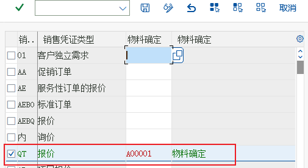
画面 26-2解释：在有些情况下，销售订单需要输入的商品代码不是本公司标准的物料主数据代码，比如需要输入客户的物料代码，或者需要输入国际物品编码（IAN）等。在 SAP 里不需要将这些特殊的…教材《S4.docx》SD 模块 · image1196.png任务 27
定义税收确定规则
后台（配置）
税收确定规则：决定税码怎么定。
教材菜单 / IMG 路径销售和分销 → 基本功能 → 税收 → 定义税收确定规则
 画面 27-1定义税收确定规则教材《S4.docx》· SD 任务 27 定义税收确定规则
画面 27-1定义税收确定规则教材《S4.docx》· SD 任务 27 定义税收确定规则
任务 28
定义客户税分类和物料税分类
后台（配置）
客户税分类 + 物料税分类 → 决定税码（销项税算多少）。
教材菜单 / IMG 路径销售和分销 → 基本功能 → 税收 → 定义主记录数据相关性
手顺要点（教材原文的逐步说明）
- 解释：在销售订单定价的过程中，销项税（条件类型 MWST）的具体税率是由客户和物料两个因素决定的。客户是通过客户主数据中的 “ 税分类” 参数决定的，而物料是通过物料主数据中的“税分类”参数决定的。
- 点击“客户”税款
- 税分类会维护在客户主数据中，在销售订单的处理过程会根据客户和物料中的税分类决定适用税率
 画面 28-1解释：在销售订单定价的过程中，销项税（条件类型 MWST）的具体税率是由客户和物料两个因素决定的。客户是通过客户主数据中的 “ 税分类” 参数决定的，而物料是通过物料主数据中的…教材《S4.docx》SD 模块 · image1202.png
画面 28-1解释：在销售订单定价的过程中，销项税（条件类型 MWST）的具体税率是由客户和物料两个因素决定的。客户是通过客户主数据中的 “ 税分类” 参数决定的，而物料是通过物料主数据中的…教材《S4.docx》SD 模块 · image1202.png 画面 28-2税分类会维护在客户主数据中，在销售订单的处理过程会根据客户和物料中的税分类决定适用税率教材《S4.docx》SD 模块 · image1206.png
画面 28-2税分类会维护在客户主数据中，在销售订单的处理过程会根据客户和物料中的税分类决定适用税率教材《S4.docx》SD 模块 · image1206.png
F. 账户确定与更新组
收入科目怎么定（账户确定）；分析报表的数据怎么进（更新组）。
任务 29
定义物料账户分配组
后台（配置）
物料账户分配组：教材用 M1 自制产品 / M2 贸易商品，直接决定收入科目。
教材菜单 / IMG 路径销售和分销 → 基本功能 → 科目分配/成本 → 收入账户确定 → 检查科目分配的相关主数据
手顺要点（教材原文的逐步说明）
- 解释：在销售订单开票时，系统会自动生成发票的会计凭证，其中销售收入科目在系统中可以由物料、客户等因素决定。颐宁公司对于销售收入科目只需要按物料分成 “ 自制产品” 和 “贸易商品” 两个科目。物料对销售收入科目的决定作用是通过物料主数据中的 “ 账户分配组”实现的。
销售和分销－基本功能－科目分配/成本－收入账户确定－检查科目分配的相关主数据
- 双击物料：账户分配组
- M1 自制产品-颐宁
返回，双击“客户：科目分配组”
 画面 29-1解释：在销售订单开票时，系统会自动生成发票的会计凭证，其中销售收入科目在系统中可以由物料、客户等因素决定。颐宁公司对于销售收入科目只需要按物料分成 “ 自制产品” 和 “贸易商…教材《S4.docx》SD 模块 · image1207.png
画面 29-1解释：在销售订单开票时，系统会自动生成发票的会计凭证，其中销售收入科目在系统中可以由物料、客户等因素决定。颐宁公司对于销售收入科目只需要按物料分成 “ 自制产品” 和 “贸易商…教材《S4.docx》SD 模块 · image1207.png 画面 29-2M1 自制产品-颐宁
返回，双击“客户：科目分配组”教材《S4.docx》SD 模块 · image1211.png
画面 29-2M1 自制产品-颐宁
返回，双击“客户：科目分配组”教材《S4.docx》SD 模块 · image1211.png任务 30
维护销售收入的总帐科目
后台（配置）
把收入科目分配到账户确定（账码 + 账户分配组 → 科目）。
教材菜单 / IMG 路径销售和分销 → 基本功能 → 科目分配/成本 → 收入账户确定 → 分配总帐科目
手顺要点（教材原文的逐步说明）
- 销售和分销－基本功能－科目分配/成本－收入账户确定－分配总帐科目
- 销售收入科目可能收到各种因素的影响，但颐宁公司的是由物料决定的。双击“表格 3 物料组/账户关键字”
- 新建
 画面 30-1销售和分销－基本功能－科目分配/成本－收入账户确定－分配总帐科目教材《S4.docx》SD 模块 · image1212.png
画面 30-1销售和分销－基本功能－科目分配/成本－收入账户确定－分配总帐科目教材《S4.docx》SD 模块 · image1212.png 画面 30-2新建教材《S4.docx》SD 模块 · image1215.png
画面 30-2新建教材《S4.docx》SD 模块 · image1215.png任务 31
在销售单据抬头等级分配更新组
后台（配置）
抬头级更新组：哪些抬头数据进入后勤信息系统（分析报表的前提）。
教材菜单 / IMG 路径后勤常规 → 后勤信息系统 → 后勤数据仓库 → 更新 → 更新控制 → 设置：销售和分销 → 更新组 → 在抬头等级分配更新组
手顺要点（教材原文的逐步说明）
- 后勤常规－后勤信息系统－后勤数据仓库－更新－更新控制－设置：销售和分销－更新组－在抬头等级分配更新组
- 解释：SAP 后勤系统包含了很多分析工具和分析报表，对于销售和分销我们需要在本步骤和下一个步骤中激活业务数据对后勤信息系统的信息更新，这样这些报表才会包含数据。本步骤是销售单据抬头的更新规则，是由销售范围、客户和销售单据类型来决定的。
解释：上图是所有已经激活更新后勤信息系统的销售凭证抬头的清单点击新建
- 设置其他抬头等级分配更新组。
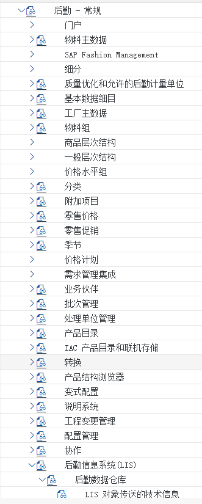
画面 31-1后勤常规－后勤信息系统－后勤数据仓库－更新－更新控制－设置：销售和分销－更新组－在抬头等级分配更新组教材《S4.docx》SD 模块 · image1216.png 画面 31-2后勤常规－后勤信息系统－后勤数据仓库－更新－更新控制－设置：销售和分销－更新组－在抬头等级分配更新组教材《S4.docx》SD 模块 · image1224.png
画面 31-2后勤常规－后勤信息系统－后勤数据仓库－更新－更新控制－设置：销售和分销－更新组－在抬头等级分配更新组教材《S4.docx》SD 模块 · image1224.png任务 32
在销售单据项目等级分配更新组
后台（配置）
项目级更新组：项目级数据（物料、数量、金额）是否更新。
教材菜单 / IMG 路径后勤常规 → 后勤信息系统 → 后勤数据仓库 → 更新 → 更新控制 → 设置：销售和分销 → 更新组 → 在项目等级分配更新组
手顺要点（教材原文的逐步说明）
- 后勤常规－后勤信息系统－后勤数据仓库－更新－更新控制－设置：销售和分销－更新组－在项目等级分配更新组
- 解释：SAP 后勤信息系统包含很多分析工具和分析报表。对于 SD，我们需要在本步骤和上步骤激活业务数据对后勤信息系统的信息更新，这些报表才会包含数据。本步骤是销售单据项目级别的更新规则，是由销售范围、客户、物料销售单据类型、行项目类别决定的。
解释：列表中是已经激活更新后勤信息系统的销售凭证行项目级别的清单，点击新条目
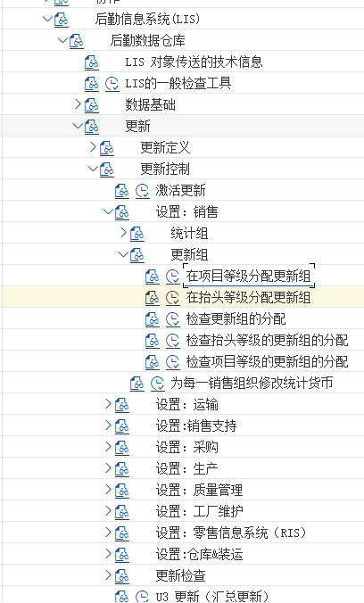
画面 32-1后勤常规－后勤信息系统－后勤数据仓库－更新－更新控制－设置：销售和分销－更新组－在项目等级分配更新组教材《S4.docx》SD 模块 · image1230.png 画面 32-2后勤常规－后勤信息系统－后勤数据仓库－更新－更新控制－设置：销售和分销－更新组－在项目等级分配更新组教材《S4.docx》SD 模块 · image1239.png
画面 32-2后勤常规－后勤信息系统－后勤数据仓库－更新－更新控制－设置：销售和分销－更新组－在项目等级分配更新组教材《S4.docx》SD 模块 · image1239.png
G. 合作伙伴确定
四个伙伴角色从哪来。
任务 33
设置合作伙伴确定
后台（配置）
合作伙伴确定：一张单据里的四个角色从哪来（客户主数据带出）。
教材菜单 / IMG 路径销售和分销 → 基本功能 → 合作伙伴确定 → 设置合作伙伴确定
手顺要点（教材原文的逐步说明）
- 销售和分销－基本功能－合作伙伴确定－设置合作伙伴确定
- 解释：系统中合作伙伴的确定受很多因素影响，也非常灵活，本次我们只增加客户主数据的相关配置，其他的使用系统预定义的内容。
- 双击“设置客户主数据的合作伙伴确认”
解释：和客户主数据相关的配置也有很多，我们基本采用预定义的内容，只是维护颐宁公司新建的客户账户组的功能分配，即各客户账户组可以扮演什么合作伙伴功能角色。
 画面 33-1销售和分销－基本功能－合作伙伴确定－设置合作伙伴确定教材《S4.docx》SD 模块 · image1241.png
画面 33-1销售和分销－基本功能－合作伙伴确定－设置合作伙伴确定教材《S4.docx》SD 模块 · image1241.png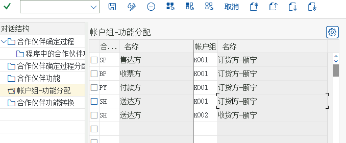
画面 33-2销售和分销－基本功能－合作伙伴确定－设置合作伙伴确定教材《S4.docx》SD 模块 · image1245.png
H. 主数据维护（前台）
物料销售视图、条件记录、客户与送达方的主数据。
任务 34
维护物料主数据的销售视图
前台MM01
物料主数据销售视图：能不能卖、项目类别组、税分类、账户分配组、装运条件。
教材菜单 / IMG 路径后勤 → 物料管理 → 物料主记录 → 物料 → 创建（一般） → MM01 立即
手顺要点（教材原文的逐步说明）
- 解释：颐宁公司的产成品“铸钢泵 170－23”和贸易商品“高速增压涡轮泵”会对外销售，在使用这两个物料时需要维护这两种物料主数据的销售视图
后勤－物料管理－物料主记录－物料－创建（一般）－MM01 立即
 画面 34-1解释：颐宁公司的产成品“铸钢泵 170－23”和贸易商品“高速增压涡轮泵”会对外销售，在使用这两个物料时需要维护这两种物料主数据的销售视图
后勤－物料管理－物料主记录－物料－创…教材《S4.docx》SD 模块 · image1246.png
画面 34-1解释：颐宁公司的产成品“铸钢泵 170－23”和贸易商品“高速增压涡轮泵”会对外销售，在使用这两个物料时需要维护这两种物料主数据的销售视图
后勤－物料管理－物料主记录－物料－创…教材《S4.docx》SD 模块 · image1246.png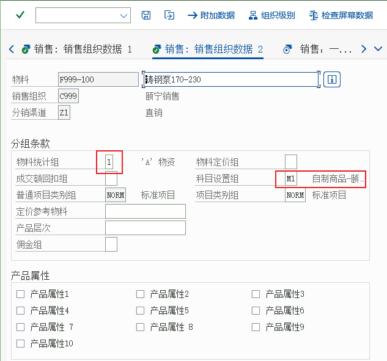
画面 34-2解释：颐宁公司的产成品“铸钢泵 170－23”和贸易商品“高速增压涡轮泵”会对外销售，在使用这两个物料时需要维护这两种物料主数据的销售视图
后勤－物料管理－物料主记录－物料－创…教材《S4.docx》SD 模块 · image1254.png任务 35
维护物料的销售价格
前台VK11
VK11 维护销售价格（条件类型 PR00）：价格真正的落点。
教材菜单 / IMG 路径后勤 → 销售和分销 → 主数据 → 条件 → 按条件类型选择 → VK11 → 创建
手顺要点（教材原文的逐步说明）
- 解释：在前面，我们定义了销售价格的计算过程。在本步骤中，我们将实际维护价格表，为颐宁公司的“铸钢泵 170－230”和“高速增压涡轮泵”维护销售价格。SAP 是按照定价过程中的条件类型来维护的，本步骤维护的是条件类型 PR00 物料价格
后勤－销售和分销－主数据－条件－按条件类型选择－VK11－创建
- PR00 代表销售价格
- 如果有层级报价，双击物料进入层级定价
 画面 35-1解释：在前面，我们定义了销售价格的计算过程。在本步骤中，我们将实际维护价格表，为颐宁公司的“铸钢泵 170－230”和“高速增压涡轮泵”维护销售价格。SAP 是按照定价过程中的…教材《S4.docx》SD 模块 · image1256.png
画面 35-1解释：在前面，我们定义了销售价格的计算过程。在本步骤中，我们将实际维护价格表，为颐宁公司的“铸钢泵 170－230”和“高速增压涡轮泵”维护销售价格。SAP 是按照定价过程中的…教材《S4.docx》SD 模块 · image1256.png 画面 35-2如果有层级报价，双击物料进入层级定价教材《S4.docx》SD 模块 · image1260.png
画面 35-2如果有层级报价，双击物料进入层级定价教材《S4.docx》SD 模块 · image1260.png任务 36
维护销项税税率
前台VK11
VK11 维护销项税税率（条件类型 MWST）。
教材菜单 / IMG 路径后勤 → 销售和分销 → 主数据 → 条件 → 按条件类型选择 → VK11 → 创建
手顺要点（教材原文的逐步说明）
- 解释：销项税也是在销售订单定价过程中计算的，条件类型 MWST。着也是作为一种价格维护，所不同的是通过税码来间接得到税率的。
 画面 36-1解释：销项税也是在销售订单定价过程中计算的，条件类型 MWST。着也是作为一种价格维护，所不同的是通过税码来间接得到税率的。教材《S4.docx》SD 模块 · image1261.png
画面 36-1解释：销项税也是在销售订单定价过程中计算的，条件类型 MWST。着也是作为一种价格维护，所不同的是通过税码来间接得到税率的。教材《S4.docx》SD 模块 · image1261.png 画面 36-2解释：销项税也是在销售订单定价过程中计算的，条件类型 MWST。着也是作为一种价格维护，所不同的是通过税码来间接得到税率的。教材《S4.docx》SD 模块 · image1264.png
画面 36-2解释：销项税也是在销售订单定价过程中计算的，条件类型 MWST。着也是作为一种价格维护，所不同的是通过税码来间接得到税率的。教材《S4.docx》SD 模块 · image1264.png任务 37
维护订货方主数据的销售视图
前台VD01
客户主数据销售视图（VD01）：销售范围、客户定价过程、运送条件、税分类。
教材菜单 / IMG 路径后勤 → 销售和分销 → 主数据 → 业务伙伴 → 客户 → 创建 → VD01
手顺要点（教材原文的逐步说明）
- 解释：K001 订货方－颐宁账户组下的客户只创建了财务数据，没有建立销售视图前台
后勤－销售和分销－主数据－业务伙伴－客户－创建－VD01
- 账户分配组，01 为国内收入。客户的账户分配组也可以影响自动确定销售收入的总帐科目，但是我们在6.29 维护销售收入的总帐科目中只维护了颐宁公司根据物料确定销售收入科
目，所以客户主数据中这个参数不起作用
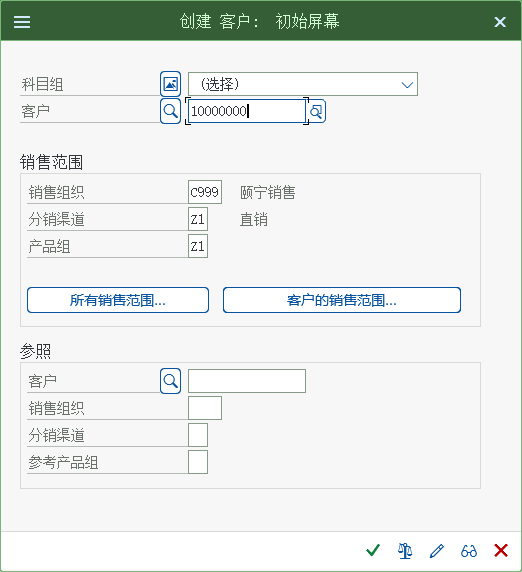
画面 37-1解释：K001 订货方－颐宁账户组下的客户只创建了财务数据，没有建立销售视图前台
后勤－销售和分销－主数据－业务伙伴－客户－创建－VD01教材《S4.docx》SD 模块 · image1265.png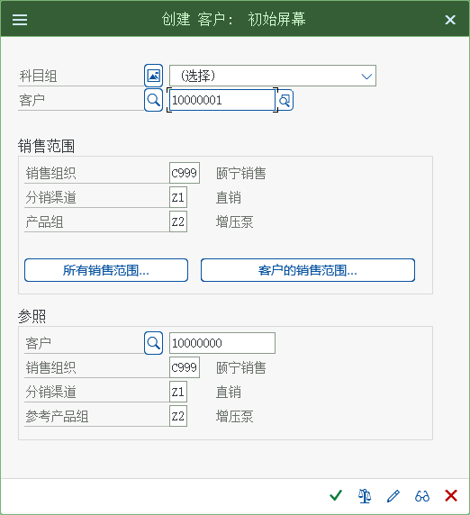
画面 37-2解释：K001 订货方－颐宁账户组下的客户只创建了财务数据，没有建立销售视图前台
后勤－销售和分销－主数据－业务伙伴－客户－创建－VD01教材《S4.docx》SD 模块 · image1275.png任务 38
维护收货方的销售视图
前台VD01
收货方（送达方）客户的销售视图：交货送到哪里。
教材菜单 / IMG 路径后勤 → 销售和分销 → 主数据 → 业务合作伙伴 → 客户 → 创建 VD01
手顺要点（教材原文的逐步说明）
- 后勤－销售和分销－主数据－业务合作伙伴－客户－创建 VD01
- 远东造船三厂只是远东造船厂的销售订单的送达方，所以销售页面没什么要维护的。点击发送，进入
 画面 38-1后勤－销售和分销－主数据－业务合作伙伴－客户－创建 VD01教材《S4.docx》SD 模块 · image1280.png
画面 38-1后勤－销售和分销－主数据－业务合作伙伴－客户－创建 VD01教材《S4.docx》SD 模块 · image1280.png 画面 38-2后勤－销售和分销－主数据－业务合作伙伴－客户－创建 VD01教材《S4.docx》SD 模块 · image1283.png
画面 38-2后勤－销售和分销－主数据－业务合作伙伴－客户－创建 VD01教材《S4.docx》SD 模块 · image1283.png任务 39
将收货方分配给订货方
前台VD02
把收货方分配给订货方（VD02 → 伙伴功能）：一个订货方可以有多个送达方。
教材菜单 / IMG 路径后勤 → 销售和分销 → 主数据 → 业务合作伙伴 → 客户 → 更改 → VD02
手顺要点（教材原文的逐步说明）
- 解释：颐宁公司的客户远东造船厂的销售订单，收货方还有可能是它的分公司远东造船厂第三分公司。要处理这样的关系，我们在远东造船厂的客户主数据中必须将第三分公司作为“ 送达方”维护
后勤－销售和分销－主数据－业务合作伙伴－客户－更改－VD02
- 点击销售区域数据
 画面 39-1解释：颐宁公司的客户远东造船厂的销售订单，收货方还有可能是它的分公司远东造船厂第三分公司。要处理这样的关系，我们在远东造船厂的客户主数据中必须将第三分公司作为“ 送达方”维护
…教材《S4.docx》SD 模块 · image1284.png
画面 39-1解释：颐宁公司的客户远东造船厂的销售订单，收货方还有可能是它的分公司远东造船厂第三分公司。要处理这样的关系，我们在远东造船厂的客户主数据中必须将第三分公司作为“ 送达方”维护
…教材《S4.docx》SD 模块 · image1284.png 画面 39-2解释：颐宁公司的客户远东造船厂的销售订单，收货方还有可能是它的分公司远东造船厂第三分公司。要处理这样的关系，我们在远东造船厂的客户主数据中必须将第三分公司作为“ 送达方”维护
…教材《S4.docx》SD 模块 · image1287.png
画面 39-2解释：颐宁公司的客户远东造船厂的销售订单，收货方还有可能是它的分公司远东造船厂第三分公司。要处理这样的关系，我们在远东造船厂的客户主数据中必须将第三分公司作为“ 送达方”维护
…教材《S4.docx》SD 模块 · image1287.png
I. 销售流程（前台）
报价 → 订单 → 交货 → 发票 → 下达 → 单据流。
任务 40
创建报价
前台VA21
报价 VA21：给客户正式价格，可含有效期。
教材菜单 / IMG 路径后勤 → 销售和分销 → 销售 → 报价 → VA21-创建
手顺要点（教材原文的逐步说明）
- 解释：远东造船厂有一个销售意向，要求颐宁销售组织提供 30 件铸钢泵 170-230，我们在本步骤来报价
后勤－销售和分销－销售－报价－VA21-创建
 画面 40-1解释：远东造船厂有一个销售意向，要求颐宁销售组织提供 30 件铸钢泵 170-230，我们在本步骤来报价
后勤－销售和分销－销售－报价－VA21-创建教材《S4.docx》SD 模块 · image1288.png
画面 40-1解释：远东造船厂有一个销售意向，要求颐宁销售组织提供 30 件铸钢泵 170-230，我们在本步骤来报价
后勤－销售和分销－销售－报价－VA21-创建教材《S4.docx》SD 模块 · image1288.png 画面 40-2解释：远东造船厂有一个销售意向，要求颐宁销售组织提供 30 件铸钢泵 170-230，我们在本步骤来报价
后勤－销售和分销－销售－报价－VA21-创建教材《S4.docx》SD 模块 · image1289.jpeg
画面 40-2解释：远东造船厂有一个销售意向，要求颐宁销售组织提供 30 件铸钢泵 170-230，我们在本步骤来报价
后勤－销售和分销－销售－报价－VA21-创建教材《S4.docx》SD 模块 · image1289.jpeg任务 41
创建销售订单
前台
销售订单：参照报价创建（后继功能 → V-01 订单），定价与可用性检查。
教材菜单 / IMG 路径后勤 → 销售和分销 → 销售 → 报价 → 后继功能 → V-01-订单
手顺要点（教材原文的逐步说明）
- 后勤－销售和分销－销售－报价－后继功能－V-01-订单
- 点击有参照创建
- 系统显示无可用库存，点击继续（建议通过MB1C 501无订单收货后再做后续的操作）
 画面 41-1后勤－销售和分销－销售－报价－后继功能－V-01-订单教材《S4.docx》SD 模块 · image1297.png
画面 41-1后勤－销售和分销－销售－报价－后继功能－V-01-订单教材《S4.docx》SD 模块 · image1297.png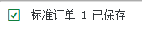
画面 41-2后勤－销售和分销－销售－报价－后继功能－V-01-订单教材《S4.docx》SD 模块 · image1302.png任务 42
创建外向交货
前台VL01N
外向交货 VL01N：确定起运点、拣配库存地点与交货内容。
教材菜单 / IMG 路径后勤 → 销售和分销 → 装运和运输 → 外向交货 → 创建 → 单个凭证 → VL01N
手顺要点（教材原文的逐步说明）
- 后勤－销售和分销－装运和运输－外向交货－创建－单个凭证－VL01N
- 后勤－销售和分销－装运和运输－外向交货－更改－VL01N-单个凭证
 画面 42-1后勤－销售和分销－装运和运输－外向交货－创建－单个凭证－VL01N教材《S4.docx》SD 模块 · image1303.png
画面 42-1后勤－销售和分销－装运和运输－外向交货－创建－单个凭证－VL01N教材《S4.docx》SD 模块 · image1303.png 画面 42-2后勤－销售和分销－装运和运输－外向交货－创建－单个凭证－VL01N教材《S4.docx》SD 模块 · image1306.png
画面 42-2后勤－销售和分销－装运和运输－外向交货－创建－单个凭证－VL01N教材《S4.docx》SD 模块 · image1306.png任务 43
创建发票凭证
前台VF01
发票 VF01：参照交货开票，生成发票凭证。
教材菜单 / IMG 路径后勤 → 销售和分销 → 出具发票 → 出具发票凭证 → VF01-创建
手顺要点（教材原文的逐步说明）
- 后勤－销售和分销－出具发票－出具发票凭证－VF01-创建
- 点击保存
 画面 43-1后勤－销售和分销－出具发票－出具发票凭证－VF01-创建教材《S4.docx》SD 模块 · image1307.png
画面 43-1后勤－销售和分销－出具发票－出具发票凭证－VF01-创建教材《S4.docx》SD 模块 · image1307.png 画面 43-2点击保存教材《S4.docx》SD 模块 · image1309.png
画面 43-2点击保存教材《S4.docx》SD 模块 · image1309.png任务 44
下达发票
前台VF02
下达发票 VF02：过账到财务会计，生成会计凭证。
教材菜单 / IMG 路径后勤 → 销售和分销 → 出具发票 → 出具发票凭证 → VF02-修改
手顺要点（教材原文的逐步说明）
- 将上步的销售发票凭证过账到财务会计前台
后勤－销售和分销－出具发票－出具发票凭证－VF02-修改
- 按小旗子，屏幕下方会提示凭证已经传送到记账，点击会计
 画面 44-1将上步的销售发票凭证过账到财务会计前台
后勤－销售和分销－出具发票－出具发票凭证－VF02-修改教材《S4.docx》SD 模块 · image1310.png
画面 44-1将上步的销售发票凭证过账到财务会计前台
后勤－销售和分销－出具发票－出具发票凭证－VF02-修改教材《S4.docx》SD 模块 · image1310.png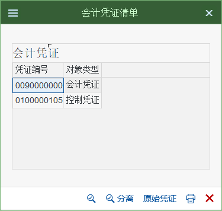
画面 44-2将上步的销售发票凭证过账到财务会计前台
后勤－销售和分销－出具发票－出具发票凭证－VF02-修改教材《S4.docx》SD 模块 · image1312.png任务 45
点击原始凭证
前台
点「原始凭证」：验证单据流（发票 → 交货 → 订单）。
 画面 45-1点击原始凭证教材《S4.docx》· SD 任务 45 点击原始凭证
画面 45-1点击原始凭证教材《S4.docx》· SD 任务 45 点击原始凭证
J. 分析与报表
订单清单、销售分析、总帐报表与教材踩坑集。
任务 46
显示销售订单明细清单
前台VA05
VA05 销售订单明细清单：日常跟进订单的入口。
教材菜单 / IMG 路径后勤 → 销售和分销 → 销售 → 信息系统 → 订单 → VA05-销售订单清单
 画面 46-1显示销售订单明细清单教材《S4.docx》· SD 任务 46 显示销售订单明细清单
画面 46-1显示销售订单明细清单教材《S4.docx》· SD 任务 46 显示销售订单明细清单
任务 47
销售分析
前台MCTA
MCTA 销售分析：标准分析报表（需先激活更新组并维护统计组）。
教材菜单 / IMG 路径后勤 → 销售和分销 → 销售信息系统 → 标准分析 → MCTA-客户
手顺要点（教材原文的逐步说明）
- 本步骤需在 30 和 31 中事先激活，并在客户和物料主数据中维护统计组，这些标准分析才会有数据
- 点击转换细分
 画面 47-1本步骤需在 30 和 31 中事先激活，并在客户和物料主数据中维护统计组，这些标准分析才会有数据教材《S4.docx》SD 模块 · image1316.png
画面 47-1本步骤需在 30 和 31 中事先激活，并在客户和物料主数据中维护统计组，这些标准分析才会有数据教材《S4.docx》SD 模块 · image1316.png 画面 47-2本步骤需在 30 和 31 中事先激活，并在客户和物料主数据中维护统计组，这些标准分析才会有数据教材《S4.docx》SD 模块 · image1319.png
画面 47-2本步骤需在 30 和 31 中事先激活，并在客户和物料主数据中维护统计组，这些标准分析才会有数据教材《S4.docx》SD 模块 · image1319.png任务 48
运行资产负债表
后台（配置）FS00MIROCK11NCK24VL01NOBYC
总帐报表（资产负债表等）与教材踩坑集：期末验证收入与税，含大量环境问题的解法。
教材菜单 / IMG 路径会计 → 财务会计 → 总分类帐 → 信息系统 → 总帐报表 → 资产负债表/损益表/现金流 → 一般的
手顺要点（教材原文的逐步说明）
- 会计－财务会计－总分类帐－信息系统－总帐报表－资产负债表/损益表/现金流－一般的
- 路径：SPRO -> 财务会计（新）-> 财务会计全局设置（新）-> 销售/购置税 -> 基本设置 -> 向计算程序分配国家
- 作业类型无法设置，也可以通过该办法解决
- 客户化错误：非当前业务交易组
- 其二RK811XUP（对所有的集团）目前用 RK811UPD 代替前者
- 是CLIENT COPY 不完整造成的，
请运行se38一下，执行两个程序中的一个：其一RK811XST(仅在当前的集团），
- “+”代表只允许销项税。 “*”代表允许所有的税类型。
然后就能正常入发票付款了。注意，退出MIRO 重新进入！
- 通过CK11N要，按照如下方式维护价格，即可。
- 退出CK11N，然后重新执行CK24
- MB1C 501 录入期初库存，可以解决无法创建VL01N外向交货单的问题
 画面 48-1会计－财务会计－总分类帐－信息系统－总帐报表－资产负债表/损益表/现金流－一般的教材《S4.docx》SD 模块 · image1320.png
画面 48-1会计－财务会计－总分类帐－信息系统－总帐报表－资产负债表/损益表/现金流－一般的教材《S4.docx》SD 模块 · image1320.png 画面 48-2会计－财务会计－总分类帐－信息系统－总帐报表－资产负债表/损益表/现金流－一般的教材《S4.docx》SD 模块 · image1384.png
画面 48-2会计－财务会计－总分类帐－信息系统－总帐报表－资产负债表/损益表/现金流－一般的教材《S4.docx》SD 模块 · image1384.png
K. 配置顺序为什么是这个顺序
- 组织结构（A~C）：数据和单据都要填组织键，组织不存在，后面什么都建不了。
- 客户账户组与定价（D~F）：主数据的屏幕格式、价格怎么算、记到哪个科目，都属于「规则」。
- 合作伙伴确定（G）：单据上的角色从哪里来。
- 主数据（H）：规则定好后再建客户与物料，因为主数据要填的就是这些规则字段。
- 单据流程（I）：配置和主数据都就绪，订单才能一路跑到发票。
- 分析（J）：最后打开统计更新，让报表有数据。
实训环境的现实真实项目里这些配置里可能已有一部分是标准值（可直接用），不需要全部自建。课程建议：先把 A~C 与 E 走一遍（组织、装运、定价），其余理解即可，遇到再查这一页。
L. 自检清单
配置做完后，用这五条验收- 客户主数据：能在至少一个销售范围建出销售视图（VD01/XD01）。
- 物料主数据：能建出销售视图，并看到项目类别组、税分类、账户分配组有值。
- 条件记录：
VK13 能查到该销售范围 + 物料的 PR00 价格。 - 订单：
VA01 建单后价格自动带出、确认交货日期有值。 - 全链：订单 →
VL01N 交货 → 发货过账 → VF01 开票 → VF02 下达，并在 VF03 里能看到会计凭证。
- 回 实训任务 按 5 个任务实操。
- 查不到字段含义时看 术语表。
{kind=link}
{kind=link}
{kind=link}
{kind=link}
{kind=link}
{kind=link}
{kind=link}
{kind=link}
{kind=link}
{kind=link}
{kind=link}
{kind=link}
{kind=link}
{kind=link}
{kind=link}
{kind=link}
{kind=link}
{kind=link}
{kind=link}
{kind=link}
{kind=link}